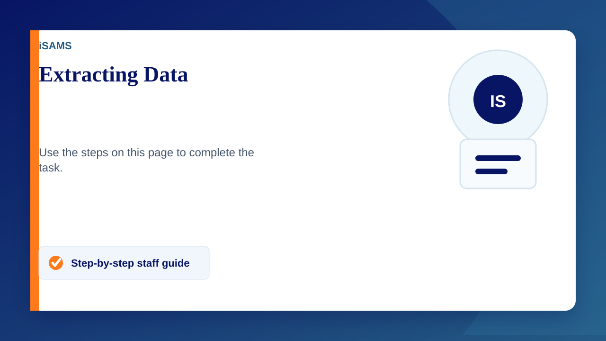

iSAMS is extremely easy and very useful for pulling off data, follow the video or the steps below to get data from iSAMS into a spreadsheet.
Extracting Student Data
- Open up iSAMS
- Navigate to Student Manager
- Enter search criteria (if necessary)
- Tick students who's data you want to extract
- Select the pink drop down on the right hand side and click "Export Wizard"
- Select create a custom report (existing ones can also be used)
- Click next
- Select any fields of data you wish to extract and click next
- Click next again
- Check the preview list of what data will be extracted and press next
- Select .xlsx or .csv file depending on your need and press next
- Make sure you click on "Click here to download the file"
- Open your file in Google sheets, office 365 or Microsoft excel.
Video
A technical error has caused a very minor issue with the video, apologies.
This page references an embedded video or file, but the Google Site did not expose a direct public media link during migration. Use the original source link below if needed.